JM-Orgue
JM-Orgue è un organo a canne virtuale per Windows, macOS e Linux. Riproduce direttamente i set di campioni Hauptwerk e GrandOrgue, compresi i grandi set surround, e si suona con una tastiera MIDI, una consolle o il mouse. Questo manuale guida attraverso il programma con schermate della versione 0.8.93.
© Martijn van der Kolk. Le schermate sono state realizzate con organi dimostrativi e propri set di prova; indirizzi di rete, token di accesso e cartelle utente sono stati resi illeggibili.
1. Per iniziare
Installazione
Scarica il programma di installazione dell'ultima versione dalla pagina delle release del progetto (per Windows JM-Orgue_<versione>_x64-setup.exe) ed eseguilo. L'installazione è per un solo utente e non richiede diritti di amministratore. Per Windows esiste anche un pacchetto MSI, per macOS un DMG e per Linux un AppImage o un deb.
Il programma può essere usato liberamente. I set di campioni non sono inclusi: li ottieni dai rispettivi autori. Nella pagina iniziale della libreria sono indicati alcuni autori che offrono set gratuiti.
Aggiornamento
JM-Orgue controlla da solo se esiste una nuova versione. In tal caso in alto compare un avviso. Scegli Aggiorna ora: il programma scarica l'aggiornamento, ne verifica la firma, lo installa e si riavvia. Se vuoi prima solo scaricare, scegli Scarica. Puoi anche controllare a mano in Impostazioni generali → Aggiornamento e feedback → Cerca aggiornamenti.
Le tre schermate principali
In alto ci sono tre schede: Organo (si suona), Impostazioni organo (tutto ciò che riguarda l'organo caricato) e Impostazioni generali (tutto ciò che riguarda il programma nel suo insieme). I tasti F1, F2 e F3 passano direttamente dall'una all'altra. La freccia accanto al nome dell'organo chiude l'organo e torna alla libreria.
2. La libreria
All'avvio vedi la libreria degli organi: una scheda per organo con foto, nome, costruttore, località e numero di registri. Fai clic su una scheda per caricare l'organo.
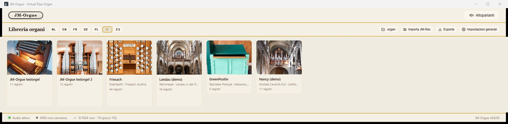
Aggiungere organi
- .organ: scegli la definizione dell'organo (GrandOrgue
.organo definizione Hauptwerk). Si sceglie il file di definizione, non la sola cartella dei campioni: solo la definizione conosce registri, unioni, tremoli ed eventuali posizioni di registrazione aggiuntive. - JM-Rec import: importa un set di campioni creato con JM-Rec.
- Esporta: crea da una cartella di campioni una definizione d'organo (
.organ), che poi carichi con il pulsante .organ.
Pulsanti della scheda: foto, ricerca, rimozione
Quando passi il mouse su una scheda, in alto a destra della foto compaiono tre pulsanti: cerca la foto online (globo), scegli tu la foto (macchina fotografica) e rimuovi dalla libreria (croce). La rimozione toglie solo la scheda dalla libreria; i file sul disco restano. Se tieni premuta una scheda per 3 secondi, il programma cerca di nuovo la foto.
La ricerca online mostra alcune foto liberamente utilizzabili di Wikimedia Commons, in base al nome, al costruttore e alla località registrati nel set. Fai clic su una foto per adottarla; fonte e licenza compaiono sotto la scheda. Se il set contiene troppo pochi dati per trovare qualcosa, scrivi tu stesso un termine (chiesa, località o nome dell'organo) nel campo in alto nella finestra e scegli Cerca.
3. Caricare e suonare un organo
Caricamento
Durante il caricamento JM-Orgue legge in memoria l'inizio di ogni registrazione di canna; il resto viene letto durante l'esecuzione. Un grande set surround può quindi richiedere un po' di tempo; la barra di avanzamento mostra a che punto è il caricamento.
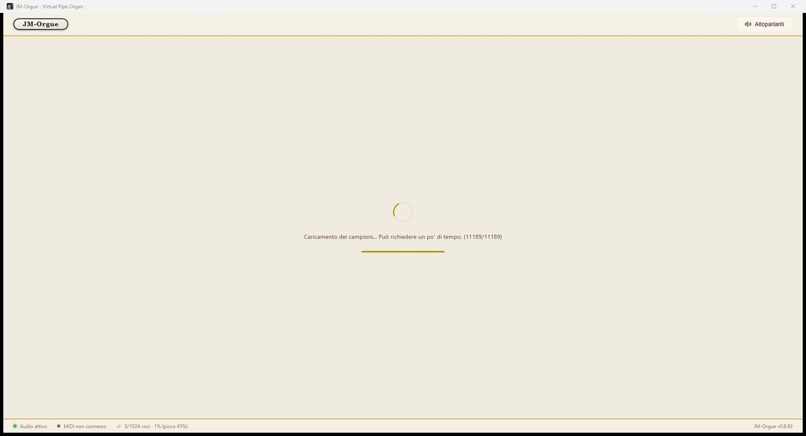
Il motore
Dopo il caricamento il motore dell'organo è spento e senza motore non si sente nulla. Accendilo con il pulsante Motore nella barra gialla o con il pulsante del motore nella barra degli strumenti. Appena il motore gira, la barra scompare. A motore acceso si sente anche il suono del motore del set (se lo contiene).
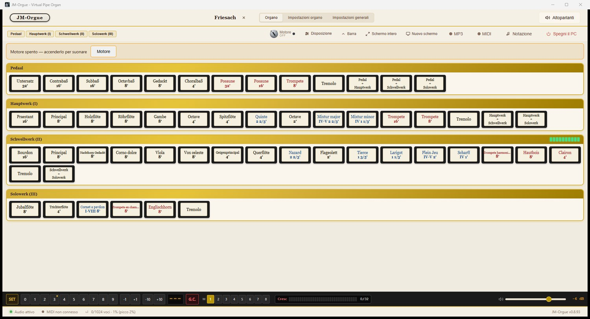
Registri, unioni e tremoli
Ogni manuale ha il proprio riquadro di registri. Fai clic su un pomello per estrarre il registro; i registri estratti diventano gialli. Il colore del nome indica la famiglia: le ance, per esempio, sono rosse, le misture e le quinte blu. In ogni riquadro ci sono anche il tremolo e le unioni (per esempio «Hauptwerk + Schwellwerk»). La barra verde a destra nell'intestazione del manuale mostra la posizione della cassa espressiva.
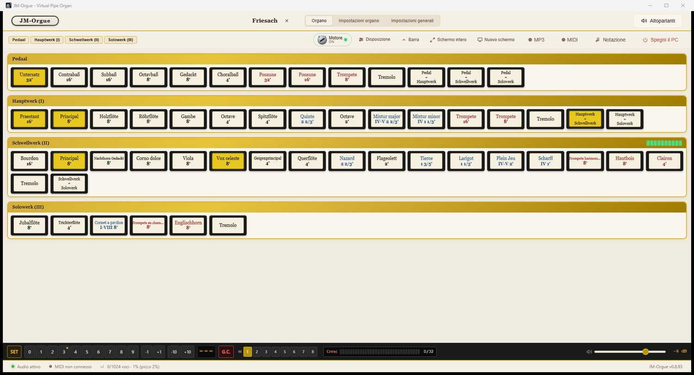
La barra del combinatore
In basso c'è la barra del combinatore (setzer) con i comandi della consolle:
| Elemento | Funzione |
|---|---|
| SET e 0–9 | Premi SET e poi una cifra per memorizzare la registrazione attuale; la cifra da sola la richiama. Un puntino accanto alla cifra indica che lì è memorizzata una registrazione. |
| −1 / +1, −10 / +10 | Passa alla registrazione precedente o successiva, oppure di dieci avanti o indietro. |
| G.C. | General Cancel: tutti i registri spenti. |
| M 1–8 | Livelli di memoria: otto banchi separati di registrazioni. |
| Cresc | Crescendo generale (vedi capitolo 7). La barra mostra il gradino attuale. |
| Cursore del volume | Volume principale. Un doppio clic ripristina il valore predefinito; con la rotella del mouse cambia di 1 dB alla volta. |
Ogni pulsante della barra del combinatore può essere collegato a un pulsante della tua consolle: fai clic con il tasto destro (o tieni premuto 3 secondi) e poi premi il pulsante sulla consolle.
4. La barra degli strumenti
Sopra i registri c'è la barra degli strumenti. A sinistra i manuali (Pedale, Hauptwerk, …) sono pulsanti: con essi mostri o nascondi il manuale. A destra ci sono le funzioni seguenti.
| Pulsante | Cosa fa |
|---|---|
| Motore | Accende o spegne il motore dell'organo. |
| Disposizione | Apre il menu della disposizione (vedi sotto). |
| Barra | Mostra o nasconde la barra principale con le schede e il pulsante del profilo. |
| Schermo intero | Modalità consolle: solo registri e barra del combinatore (F11). |
| Nuovo schermo | Apre una finestra aggiuntiva con gli stessi registri, per esempio per un secondo monitor o un secondo manuale. |
| MP3 | Registra ciò che senti. La registrazione va in Documenti\JM-Orgue-opnames. Fai clic sul contatore rosso per fermare; il programma dice poi dove si trova il file. |
| MIDI | Registra ciò che suoni (solo le note) come file .mid. Fai clic sul contatore blu per fermare e scegli dove salvare. |
| Notazione | Apre la finestra di notazione: le note compaiono mentre suoni, con livelli, sovraincisione e modifica. Qui si può anche aprire un file MIDI esistente. |
| Spegni il PC | Chiude il software e il computer, dopo conferma; prima viene salvato l'ultimo stato. Con il tasto destro o tenendo premuto 3 secondi si collega il pulsante a un pulsante della consolle. |
Il menu della disposizione
Con Disposizione adatti l'aspetto allo schermo: Adatta sceglie la dimensione dei pomelli in modo che tutti i registri stiano sullo schermo, i pulsanti meno/più cambiano larghezza e altezza dei pomelli, e inoltre scegli se disporre i manuali uno sotto l'altro o affiancati (verticale), pomelli tondi invece che rettangolari e dove mettere le unioni (nel manuale o in una barra propria). La scelta viene ricordata per ogni organo.
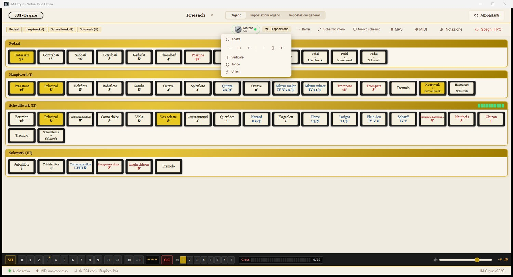
Schermo intero (modalità consolle)
In questa modalità scompaiono la barra del titolo, la barra delle applicazioni di Windows e la barra principale: vedi solo i registri e la barra del combinatore. In alto c'è una stretta striscia con quattro pulsanti: Barre (riporta temporaneamente la barra principale), Motore (acceso o spento), Esci da schermo intero e Spegni (chiude software e computer). F11 attiva e disattiva questa modalità; Esc la disattiva.
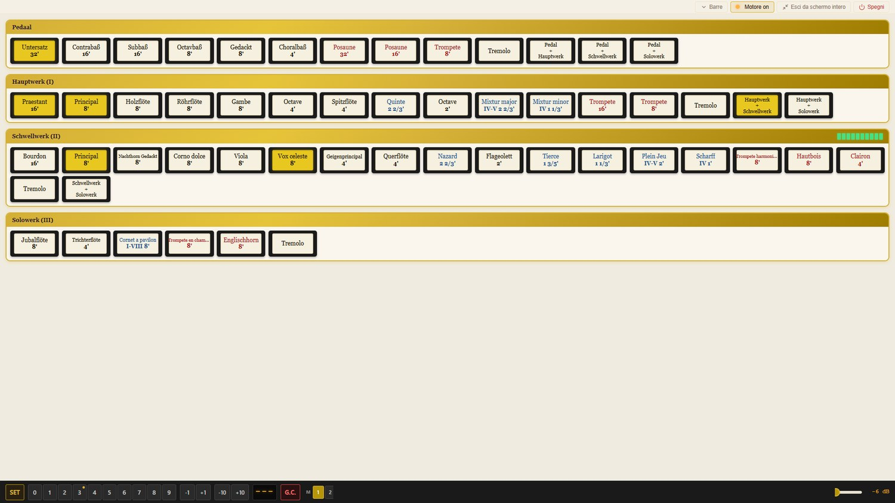
Un secondo schermo
Nuovo schermo apre una finestra separata che puoi trascinare su un altro monitor o lasciare piccola accanto alla finestra principale. Ha una propria disposizione: se i pomelli sono troppo piccoli, scegli Disposizione e imposta larghezza e altezza dei pomelli oppure scegli i manuali uno sotto l'altro o affiancati.
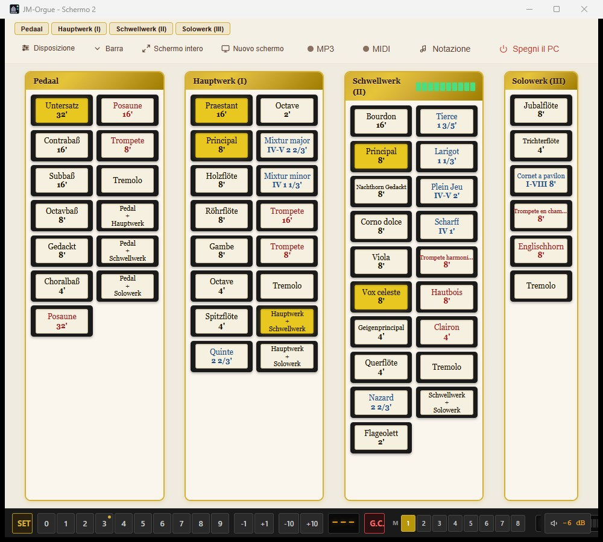
5. Più posizioni di ascolto
Alcuni set di campioni sono registrati in più punti della chiesa, per esempio vicino, davanti, a metà e dietro. Un set così mostra nella barra degli strumenti i pulsanti Prospettiva, uno per posizione. Fai clic su una posizione per attivarla o disattivarla; ne possono suonare più insieme. Alla loro destra c'è la posizione di ascolto: un cursore tra «alla consolle» e «in fondo» che mescola in modo continuo le posizioni registrate.
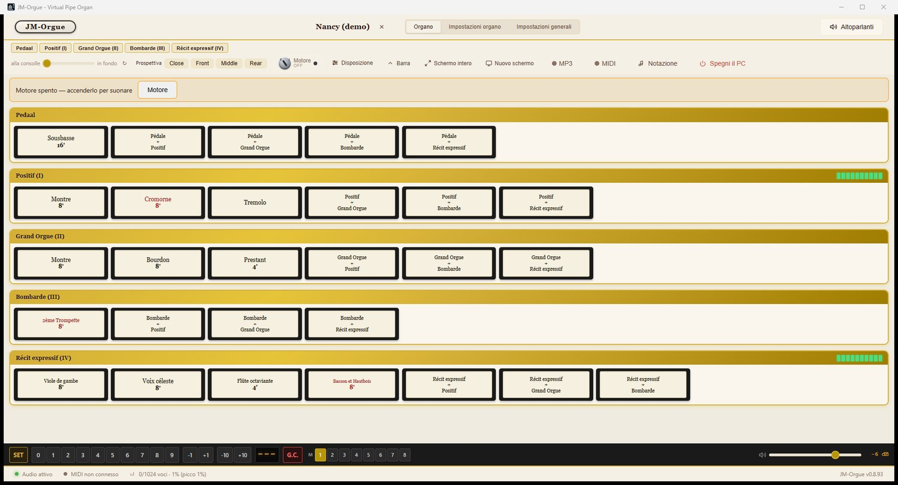
6. La procedura guidata per un organo nuovo
Quando carichi un organo per la prima volta, si avvia da sola la procedura guidata «Configurazione dell'organo». In sei passi percorre tutto ciò che va collegato alla tua consolle. Puoi cambiare tutto in seguito e puoi riavviare la procedura in Impostazioni organo → Instradamento → Procedura guidata. Più tardi chiude la procedura e la riproporrà alla prossima apertura; Salta (passo 1) la salta del tutto.
- Inizio: panoramica dei passi.
- Canale MIDI per manuale: per ogni manuale scegli Apprendi e suona un tasto su quel manuale. Il programma ricorda il canale. I pulsanti funzionano solo se è collegato un dispositivo MIDI (Impostazioni generali → MIDI); altrimenti compare un avviso.
- Casse espressive e crescendo: scegli Apprendi e muovi il pedale da completamente chiuso a completamente aperto. Lo stesso vale per il crescendo generale. Se il set ha casse espressive per voce (capitolo 9), compaiono anche qui.
- Uscite per gli altoparlanti: scegli driver e dispositivo, salvali come profilo «Altoparlanti» e scegli per ogni manuale le uscite dell'interfaccia audio su cui deve suonare. Sotto ci sono le stesse scelte per il suono del motore, il rumore ambientale e i clic della meccanica, i registri degli effetti e il rumore del tremolo, se il set li ha.
- Uscite per le cuffie: lo stesso per il secondo profilo, per esempio l'uscita cuffie. Da quel momento passi da un profilo all'altro con il pulsante Altoparlanti in alto a destra.
- Fatto: le impostazioni sono state salvate per questo organo.
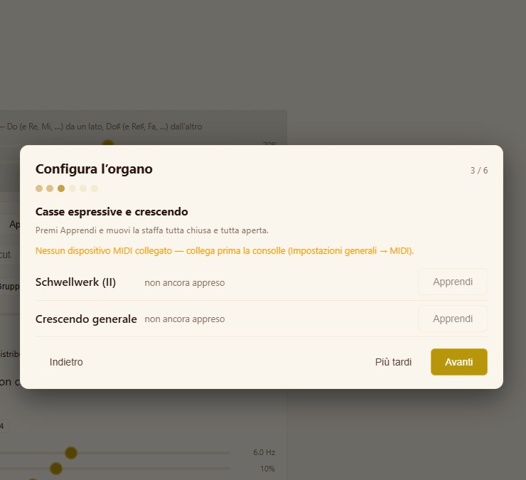
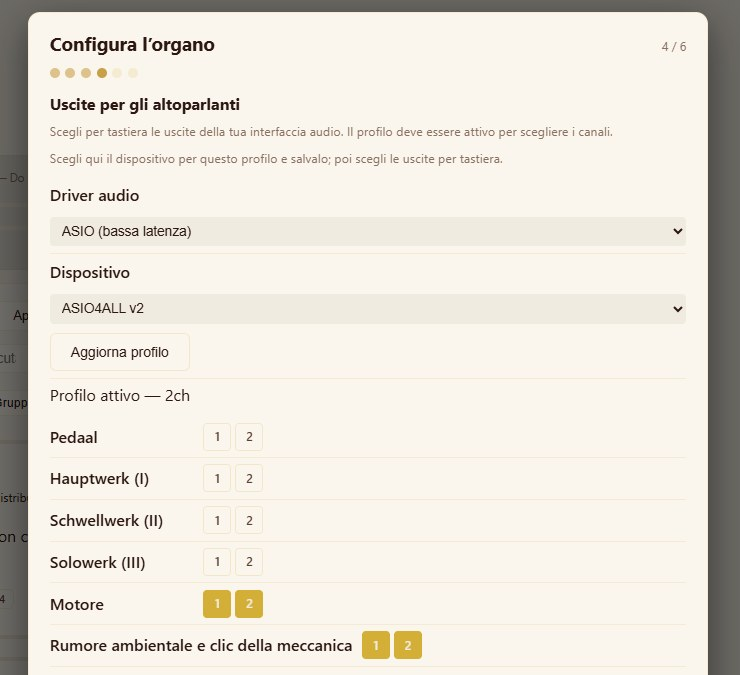
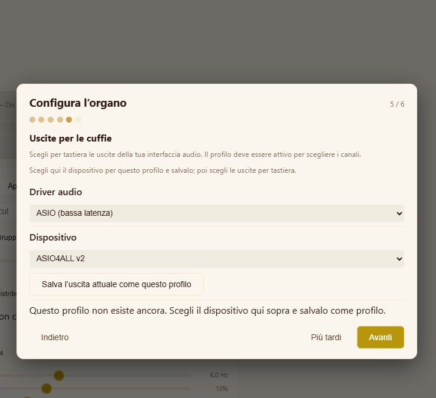
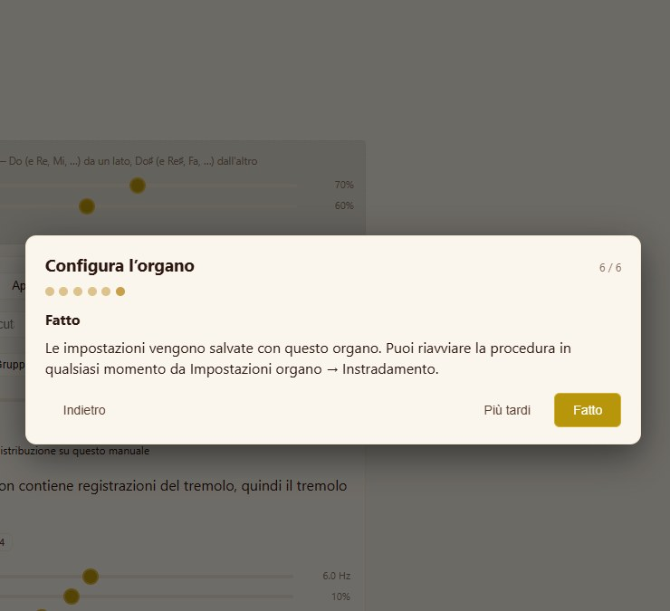
7. Impostazioni organo
Tutte le impostazioni dell'organo caricato vengono memorizzate con quell'organo. In alto ci sono cinque schede: Suono, Crescendo, Ordine dei registri, Instradamento e Tutto; l'ultima dispone tutti i blocchi uno sotto l'altro.
Suono
Il primo blocco contiene le impostazioni principali:
- Volume: il volume principale di questo organo.
- Temperamento: «Originale» suona le canne come sono state registrate. Gli altri temperamenti (equabile e temperamenti storici) accordano le canne in base all'altezza misurata di ogni registrazione. Sotto la scelta vedi quante canne hanno un'altezza misurata. Con Temperamento personale... imposti tu stesso lo scarto in cent per ogni nota.
- Accordatura: tutto insieme più alto o più basso, in cent.
Il riverbero regola il riverbero. Se il set ha già l'acustica della chiesa nelle registrazioni, viene segnalato (con il pulsante Torna alla registrazione (riverbero spento) per disattivare il riverbero aggiuntivo): un riverbero aggiuntivo è allora questione di gusto. Scegli tra Algoritmico (riverbero calcolato con RT60, ritardo, smorzamento e dimensione della sala, anche come preset) e A convoluzione (IR) con una propria risposta all'impulso (IR). Con Mix decidi quanto riverbero si sente.
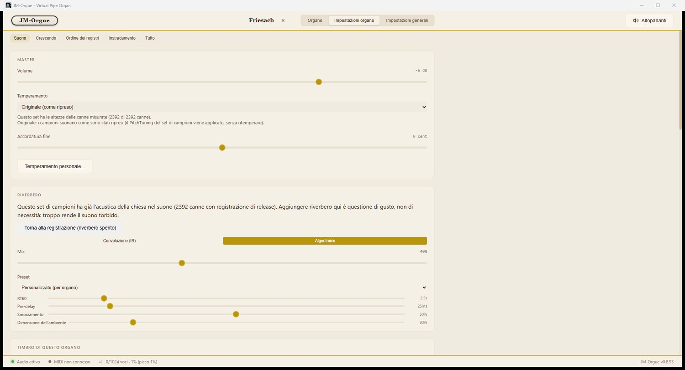
Il timbro di questo organo è una regolazione del timbro separata per ogni organo; la correzione per cuffie o altoparlanti è distinta, nelle impostazioni generali. Il modello del vento fa «respirare» l'organo: un accordo con molti registri abbassa la pressione del vento, come in un organo vero, e flauti e ance reagiscono in modo diverso. Scegli il numero di gruppi di vento (quali manuali condividono gli stessi mantici) e, per ogni gruppo, dimensione del mantice, smorzamento, caduta massima di pressione e carattere del vento.
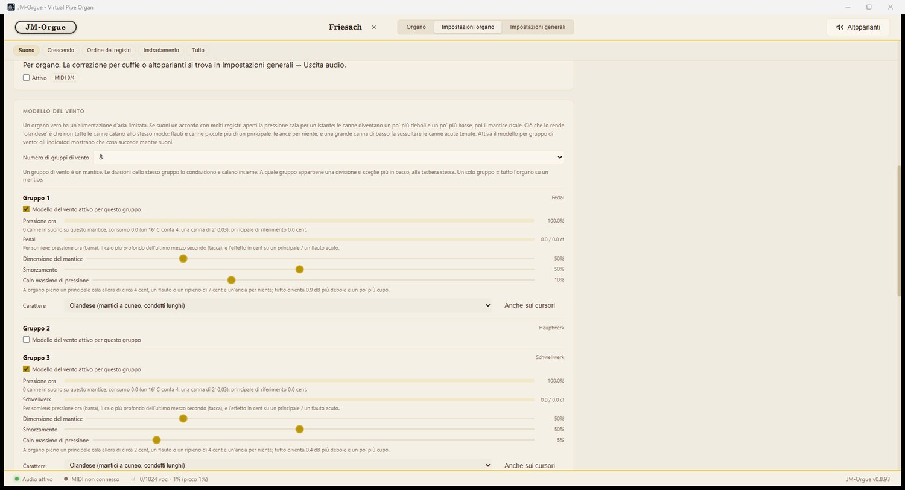
Rumori mostra i suoni continui contenuti nel set, come il motore e il rumore della sala. Imposti il volume, accendi o spegni il motore e puoi attivare la meccanica della tastiera (tasti che scattano). La meccanica della tastiera è disattivata per impostazione predefinita, perché occupa molta memoria e richiede di ricaricare l'organo.
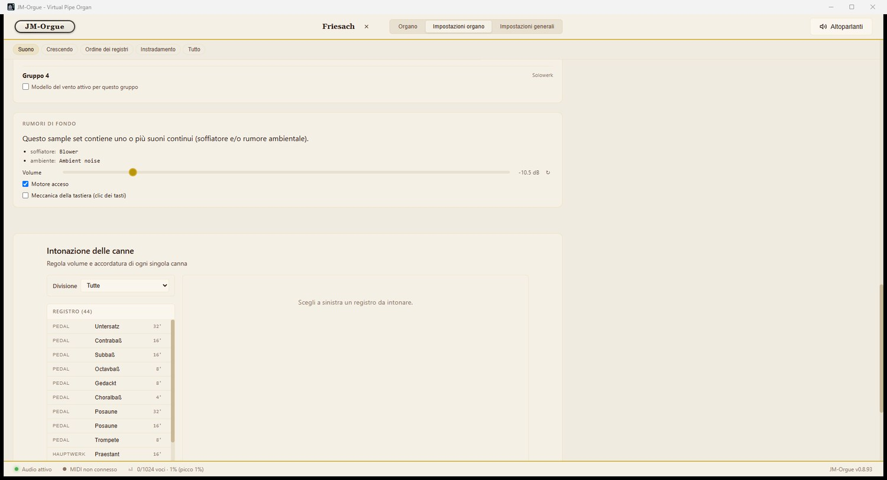
In fondo c'è l'intonazione delle canne: scegli a sinistra un registro e regola volume e accordatura di ogni canna singolarmente.
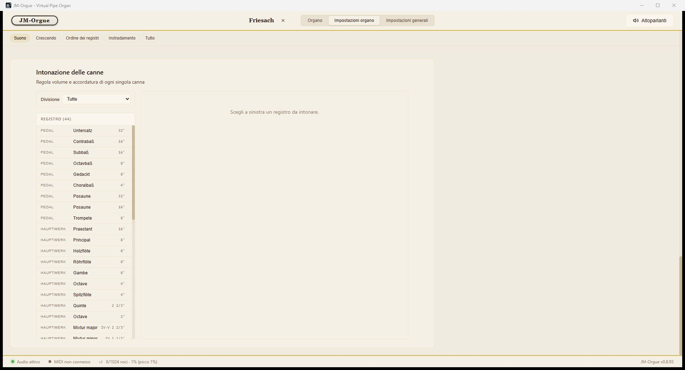
Crescendo
Il crescendo generale estrae passo dopo passo sempre più registri quando muovi il pedale del crescendo. Decidi tu quali registri entrano a quale gradino:
- Attivo accende il crescendo; Gradini è il numero di gradini.
- Riempimento automatico inserisce una proposta adatta ai registri di questo organo. Con le opzioni sotto decidi se entrano le unioni, se entrano i registri di colore (sesquialtera, cornetto, terza), le ance da 32′ e le ance in chamade, e se le unioni d'ottava entrano solo nel tutti. Cancella svuota la matrice.
- Nella matrice, un clic su una casella attiva o disattiva quel registro in quel gradino; Shift+clic lo imposta per tutti i gradini da quello in poi.
- Apprendi pedale collega il tuo pedale del crescendo; in fondo puoi anche inserire a mano canale e numero CC.
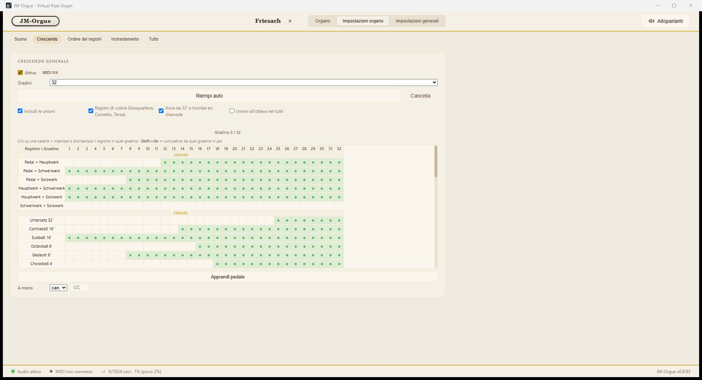
Ordine dei registri
Qui decidi l'ordine dei registri in ogni manuale. Trascina un registro per la maniglia per spostarlo. Accanto a ogni registro vedi la lunghezza in piedi e la famiglia (colore del nome). Con le frecce cambi l'ordine passo per passo e Ripristina riporta l'ordine del set.
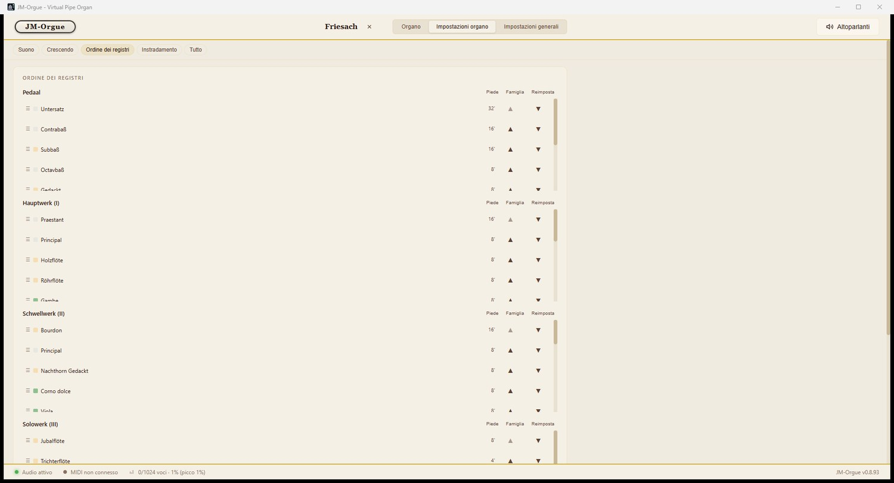
Instradamento
Questa scheda collega l'organo al tuo hardware. In alto c'è un blocco per ogni manuale:
- Canale: il canale MIDI su cui il manuale ascolta («Tutti» = ogni canale). Apprendi fissa canale ed estensione quando suoni prima il tasto più basso e poi il più alto.
- Trasp: trasposizione in semitoni. Estensione: tasto più basso e più alto. Ottava corta: per set con ottava di bassi corta.
- Cassa espressiva: attiva la cassa espressiva di quel manuale; compaiono allora i pulsanti per apprendere il pedale e le impostazioni di volume minimo e frequenza di taglio a cassa chiusa.
- Alimentazione del vento: a quale gruppo di vento appartiene il manuale.
- Panorama e Uscite: posizione nell'immagine stereo e canali di uscita dell'interfaccia audio su cui suona il manuale. Due uscite consecutive formano una coppia stereo; un singolo canale suona in mono.
- C/Cis: divide le canne su due lati, come i somieri Do e Do diesis in un organo vero; forza e caduta globali sono nel blocco sopra.
- LFO del tremolo: se il set non ha vere registrazioni del tremolo, il programma lo calcola. Velocità, ampiezza e altezza si regolano qui.
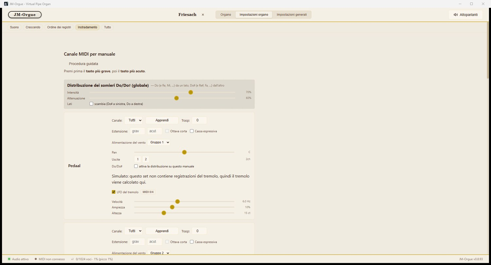
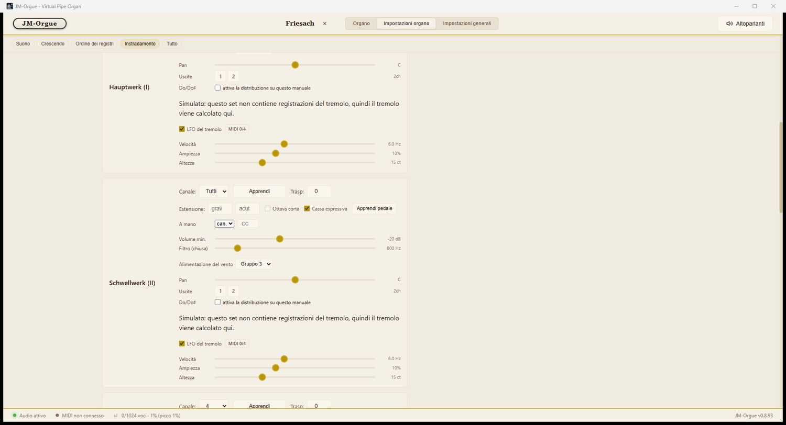
Più sotto c'è l'Uscita audio dei rumori: per ogni tipo di suono scegli da quali uscite viene riprodotto. Motore è il suono del motore; Rumore ambientale e clic della meccanica riguarda il rumore della sala e i clic di registri e tasti; i set con registri degli effetti (cimbalstern, usignolo e simili) e rumore del tremolo hanno una riga propria. Conta soprattutto con più di due uscite, quando i manuali suonano su canali diversi da 1–2. Subito sotto:
- Tastiera continua: i tasti fuori dall'estensione registrata di un registro suonano la canna più vicina, trasposta all'altezza giusta, invece di tacere. Una tastiera da 61 tasti continua così a suonare su un set con meno note.
- Accordare automaticamente le canne: accorda le canne in base all'altezza misurata, conservando i registri volutamente ondeggianti. Attivo per impostazione predefinita.
- Correzione d'altezza: tutto insieme più alto o più basso in cent (Zero ripristina il valore).
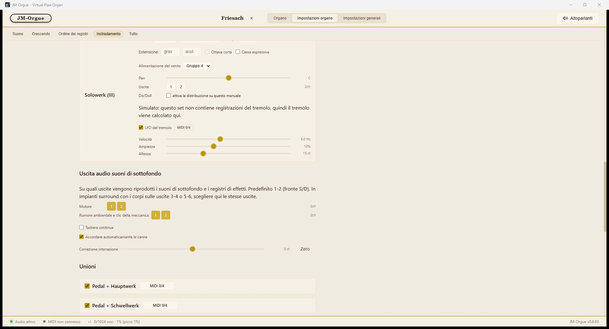
Più in basso ci sono le Unioni (attivazione e disattivazione, con un pulsante MIDI per ogni unione) e le unioni aggiuntive: unioni che non sono nel set di campioni ma che derivano dalla disposizione dei manuali; seleziona ciò che vuoi aggiungere e compare subito nella barra delle unioni. Le Assegnazioni MIDI sono un unico elenco di tutte le assegnazioni MIDI di questo organo, che puoi modificare, eliminare o aggiungere a mano. In fondo, Apri .mid permette di riprodurre un file MIDI sull'organo.
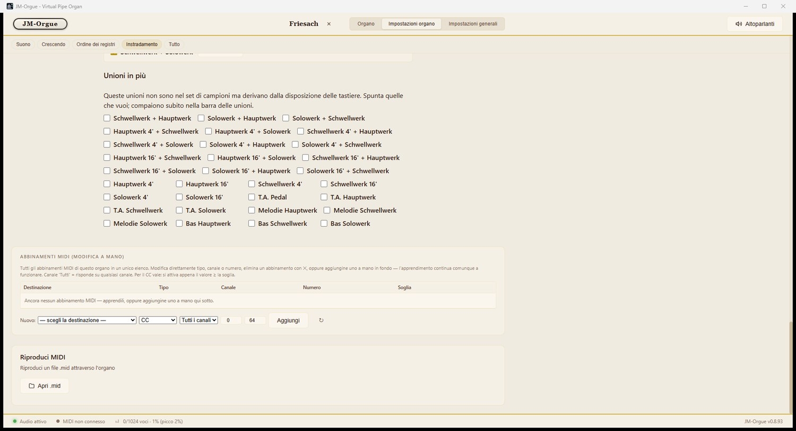
8. Impostazioni generali
Queste impostazioni valgono per il programma nel suo insieme. Le schede sono Uscita audio, Correzione dei campioni, MIDI, Apprendi pulsanti, Visualizzazione e Aggiornamento e feedback.
Uscita audio
- Driver audio e dispositivo: per la latenza minima scegli ASIO (per esempio il driver della tua interfaccia audio); WASAPI funziona con la normale scheda audio di Windows. La riga «Attualmente» qui sotto mostra cosa sta suonando in questo momento.
- Segnale di prova: fai clic sul numero di un canale per inviare un suono esattamente su quell'uscita e sentire quale presa appartiene a quale altoparlante.
- Polifonia e Core di calcolo per il missaggio: il numero massimo di canne che suonano insieme e il numero di core del processore su cui si distribuisce il lavoro di missaggio. La scelta predefinita è adatta al tuo computer; l'indicatore di carico mostra l'effetto.
- Riproduci i campioni stereo in stereo: mantiene l'immagine stereo delle registrazioni stereo. Disattivato significa mix mono e dimezza l'uso di memoria di tali set.
- Buffer iniziale per registrazione (novità di questa versione): quanto di ogni registrazione di canna è subito in memoria: 200 ms, 300 ms, 500 ms, 1 s o 2 s (predefinito). Un buffer più breve fa risparmiare molta memoria e tempo di caricamento; il resto viene letto durante l'esecuzione. La scelta vale dopo aver ricaricato l'organo.
- Dimensione del buffer: più piccola significa latenza minore, ma carica di più il computer. Applica attiva la scelta.
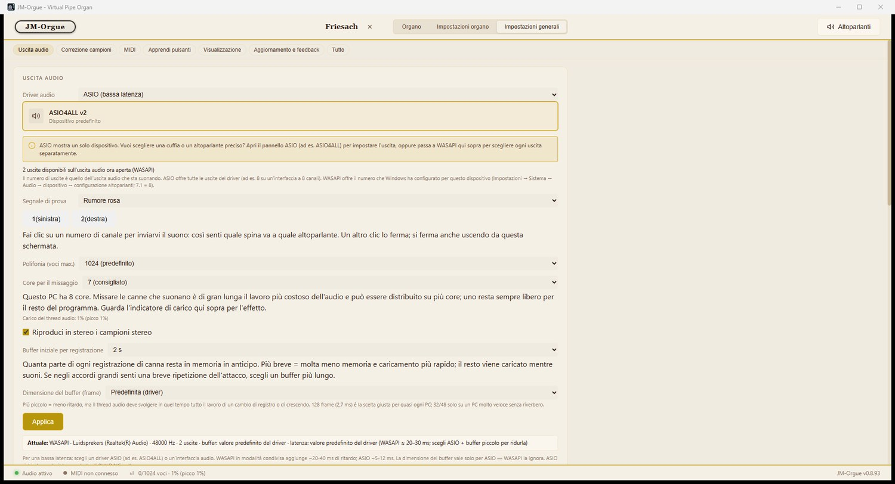
I profili di uscita memorizzano due impostazioni complete di uscita, per esempio altoparlanti tramite ASIO e cuffie tramite WASAPI, con la scelta dei canali per ogni manuale. Scegli l'uscita desiderata, fai clic su Salva la scelta attuale accanto a Altoparlanti o Cuffie, poi passa dall'una all'altra con il pulsante Altoparlanti in alto a destra o con un pulsante MIDI appreso. Il profilo attivo è evidenziato.
La correzione per cuffie o altoparlanti applica una correzione del timbro alla sola uscita (non all'organo): scegli per quale profilo vale, attivala e scegli un preset dall'elenco AutoEq oppure importa o esporta una correzione tua.
Più sotto ci sono le opzioni per avviare automaticamente il programma con Windows, caricare automaticamente l'ultimo organo aperto, chiudere tutto il software con la croce sullo schermo aggiuntivo e ripristinare l'ultima registrazione. L'archivio MIDI automatico salva in background tutto ciò che suoni come file .mid per sessione: inizia con la prima nota e termina dopo un silenzio.
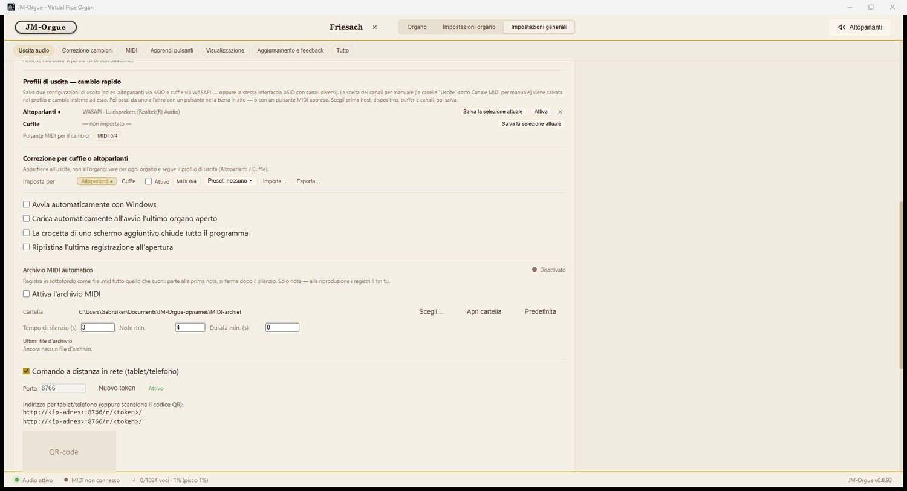
Con il controllo remoto in rete (tablet/telefono) comandi l'organo da un tablet o telefono sulla stessa rete Wi-Fi. Il programma mostra un indirizzo e un codice QR da scansionare, e tu scegli quali elementi e quali manuali compaiono sullo schermo esterno. La prima volta il Firewall di Windows chiede se JM-Orgue può ricevere connessioni: scegli «Consenti accesso» per le reti private.
In fondo c'è la frequenza di campionamento. Dipende dalla scheda audio stessa: con ASIO la imposti nel pannello del driver, con WASAPI nelle impostazioni audio di Windows.
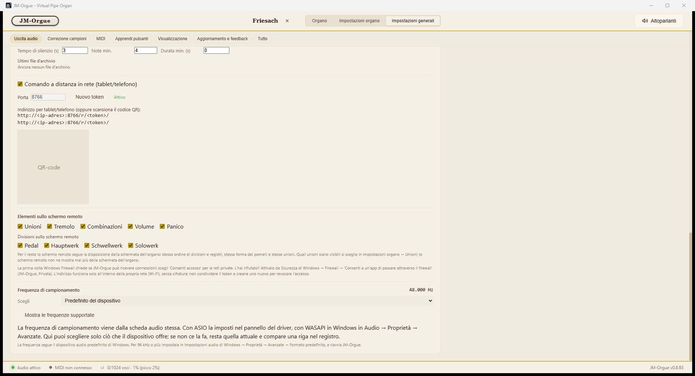
Correzione dei campioni
Due strumenti per mettere in ordine i campioni dell'organo caricato. Silenzio prima dell'attacco trova e toglie il silenzio all'inizio dei campioni (soglia del silenzio in dB e inizio da conservare si impostano da sé); Loop trova un buon loop di sostegno, vi inserisce una dissolvenza incrociata per una transizione dolce e salva i punti di loop nel file, con l'opzione di farlo solo per i file senza loop. Con Scansiona controlli prima cosa cambierebbe. Gli originali vengono prima conservati in una cartella _backup, prima che i file vengano sovrascritti.
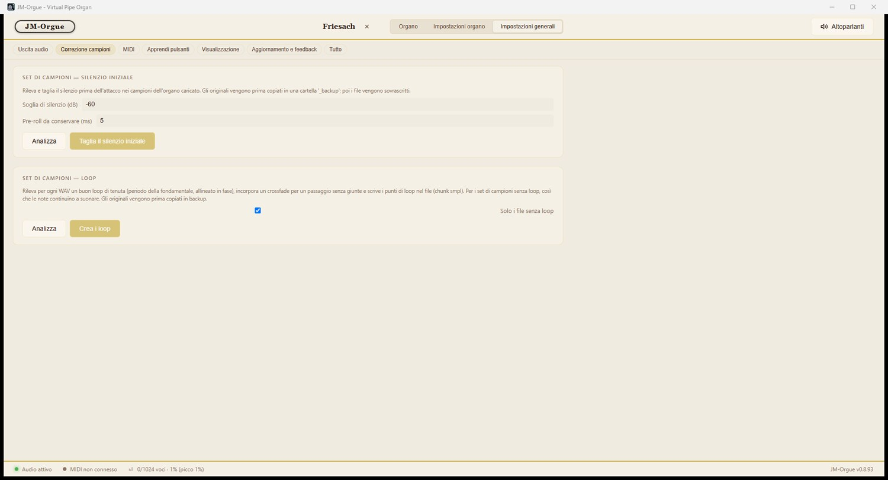
MIDI
Ingresso MIDI mostra i dispositivi MIDI collegati (con Aggiorna dispositivi cerchi di nuovo); in Bluetooth MIDI cerchi dispositivi wireless con Scansiona. Il ritorno di segnalazione (MIDI out) fa illuminare la tua consolle in base alla registrazione: scegli il protocollo (luci dei registri tramite Note On/Off, display di testo Hauptwerk o consolle Johannus/Content), l'uscita MIDI, il canale e la nota di base. Ogni registro riceve poi automaticamente un numero di nota a partire dalla nota di base, oppure apprendi un vero pulsante della consolle per ogni registro con Apprendi per ogni voce….
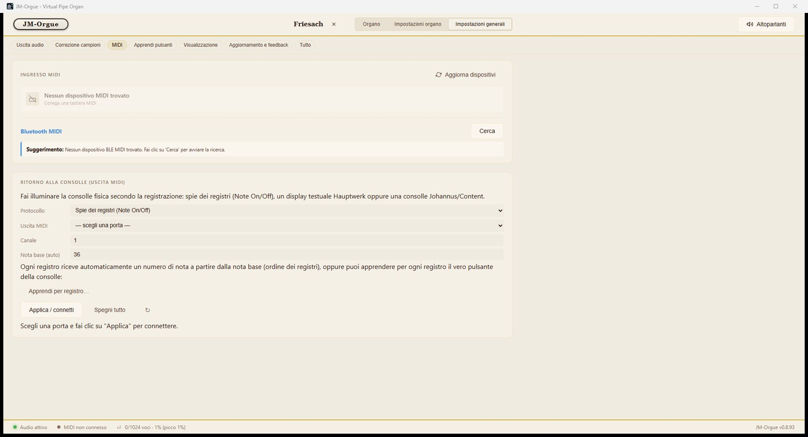
Apprendi pulsanti
Qui apprendi i pulsanti fissi della consolle (pistoni): accordatore, SET, passi dei preset, livelli di memoria e spegnimento del computer. I pulsanti delle cifre 0–9 si apprendono sulla barra del combinatore stessa (tasto destro o pressione di 3 secondi).
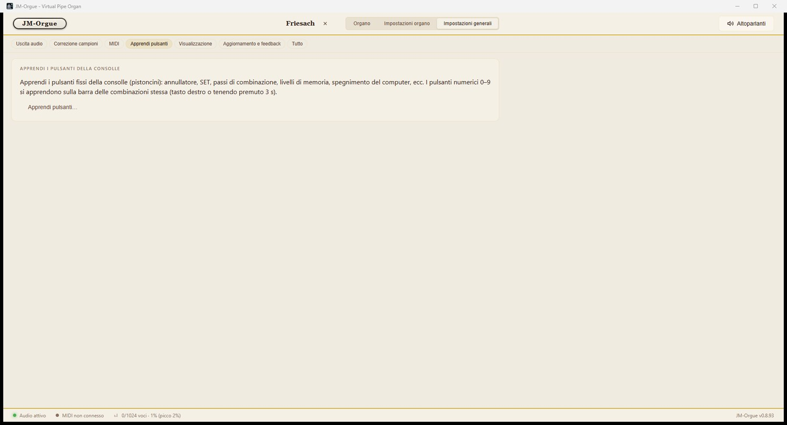
Visualizzazione
Scegli la lingua del programma (Nederlands, English, Français, Deutsch, Polski, Italiano ed Español) e l'aspetto: cinque preset di colori pronti (Base, Legno classico, Moderno minimalista, Notte e Sera) oppure imposta colori tuoi, dai loro un nome ed esportali. Più sotto regoli stile, dimensione e spessore del carattere dei registri e lo sfondo.
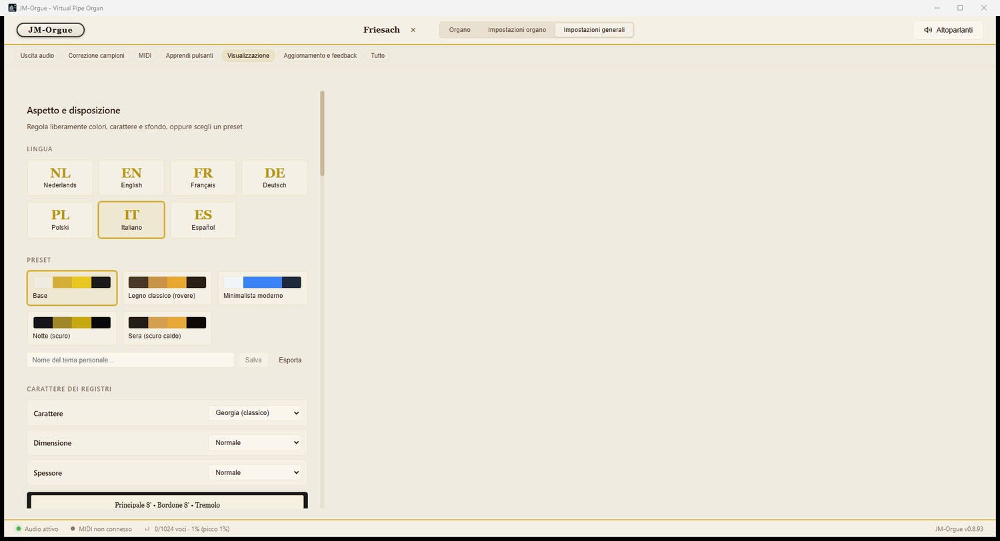
Aggiornamento e feedback
Qui trovi il numero di versione, le informazioni sulle fonti dei preset per cuffie e dei dati degli altoparlanti utilizzati, e i pulsanti Invia feedback…, Tramite GitHub (issues) e Cerca aggiornamenti.
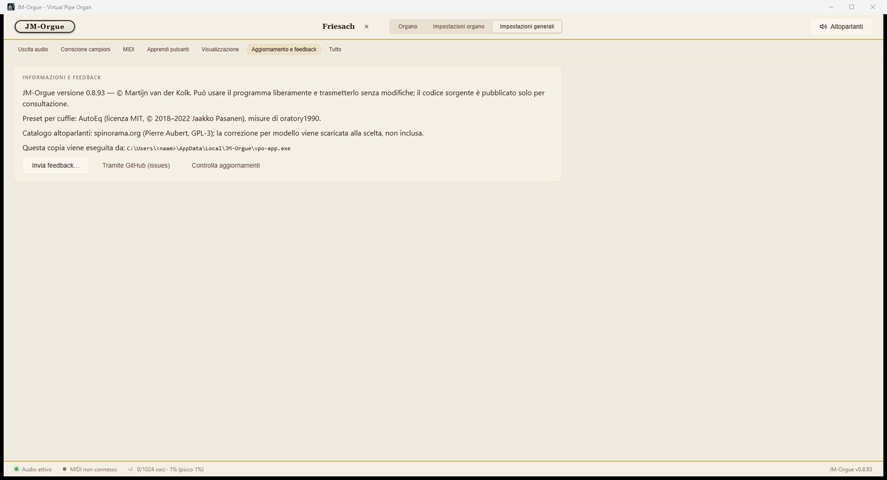
9. Configurazione acustica di un set
La definizione di un organo può rimandare a un file aggiuntivo, JM-ACOUSTICS.json, che descrive l'acustica del set: casse espressive assegnate a una voce anziché a un manuale, risposte all'impulso per il riverbero, percorsi di missaggio e uscite. Se il tuo set ha un file così, lo riconosci da un blocco aggiuntivo in Impostazioni organo → Suono.
- Il programma legge il file e lo controlla: dimensione del file, validità di tutti i riferimenti, percorsi che restano nella cartella dell'organo e collegamenti delle canne che corrispondono alla definizione caricata. Se qualcosa non va, l'organo suona semplicemente secondo la definizione normale e il blocco indica perché la configurazione non è stata letta.
- Casse espressive per voce: le voci che il file colloca in una cassa ricevono una propria cassa espressiva e un proprio pedale d'espressione, indipendentemente dal manuale su cui suonano. Una voce usata da due manuali segue così sempre la stessa cassa. Il pedale si apprende in Instradamento (Apprendi pedale) o nella procedura guidata.
- Le risposte all'impulso del set sono elencate sotto il blocco, con canali e durata. Con Usa come riverbero adotti una come riverbero a convoluzione. Il ruolo dei canali in tali registrazioni non è definito; il programma tratta i primi due come una coppia stereo.
- I percorsi di missaggio, i bus di uscita e le transizioni degli effetti del file non vengono per ora applicati automaticamente; resta determinante la definizione normale.
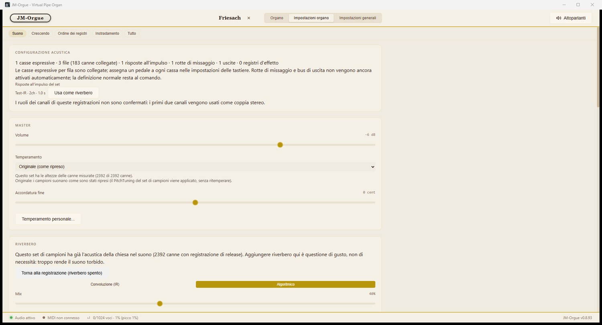
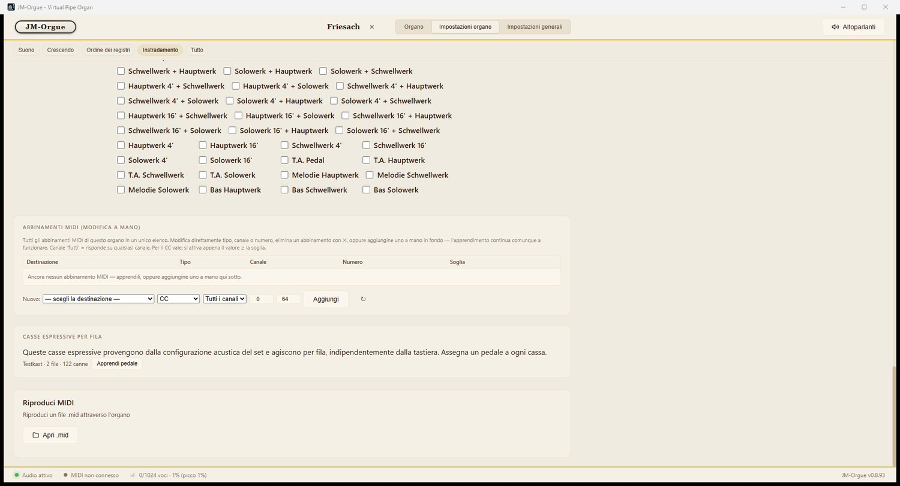
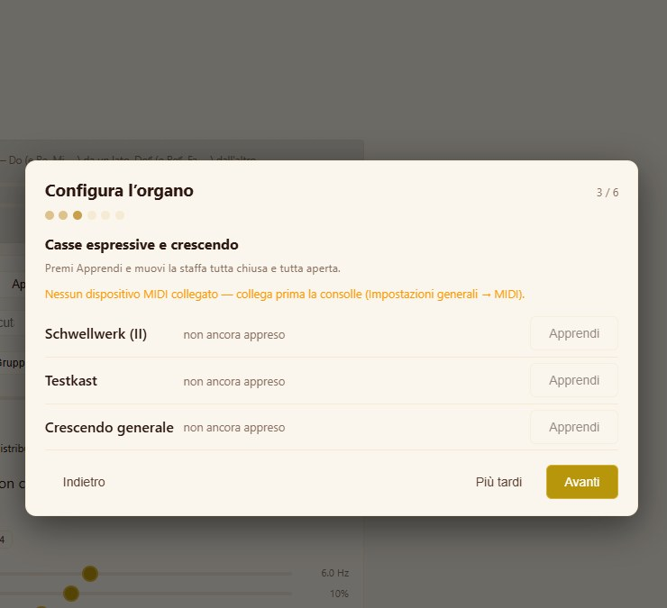
10. Scorciatoie da tastiera e consigli
| Tasto | Funzione |
|---|---|
| F1 F2 F3 | Organo, Impostazioni organo e Impostazioni generali. |
| F11 | Schermo intero (modalità consolle) acceso o spento. |
| Esc | Uscire dallo schermo intero. |
| Tasto destro o 3 s di pressione | Su un pulsante della barra del combinatore: collega quel pulsante a un pulsante della consolle (apprendimento MIDI). |
| Doppio clic sul volume | Il volume principale torna al valore predefinito. |
| Scheda premuta 3 s | Nella libreria: cerca di nuovo la foto di quella scheda. |
- Tutte le impostazioni vengono memorizzate per ogni organo, anche quando chiudi l'organo o il programma.
- Per una consolle fissa: attiva Avvio automatico con Windows e Carica automaticamente l'ultimo organo aperto e usa la modalità consolle.
- Con più di due uscite: scegli in Instradamento le uscite di ogni manuale e poi le stesse uscite per i rumori.
11. Risoluzione dei problemi e feedback
| Problema | Cosa puoi provare |
|---|---|
| Nessun suono | Il motore gira? In basso c'è «Audio attivo»? In Uscita audio è impostato il dispositivo giusto e le uscite dei manuali corrispondono alla tua interfaccia audio? Usa il segnale di prova per sentire le uscite. |
| La tastiera non reagisce | In basso compare «MIDI non connesso» finché non c'è un dispositivo MIDI. Controlla Impostazioni generali → MIDI e il canale MIDI del manuale in Instradamento. |
| L'organo suona stonato | Controlla che l'accordatura automatica delle canne sia attiva e scegli in Suono il temperamento «Originale» o quello desiderato. |
| Scricchiolii o interruzioni | Riduci la polifonia, estrai meno registri, disattiva il riverbero o scegli un buffer più grande. Un buffer iniziale breve richiede un disco veloce; altrimenti scegline uno più lungo. |
| Memoria insufficiente | Scegli un buffer iniziale più breve, disattiva i campioni stereo oppure le posizioni di ascolto che non usi. |
| Rumori o registri degli effetti non si sentono nell'altoparlante giusto | In Instradamento, in «Uscita audio dei rumori», scegli le stesse uscite dei manuali. |
Invia feedback… (Impostazioni generali → Aggiornamento e feedback) prepara un messaggio con la tua segnalazione e i file di registro delle ultime sessioni, così lo sviluppatore può vedere cosa è successo. Puoi anche pubblicare la segnalazione nella pagina del progetto su GitHub.